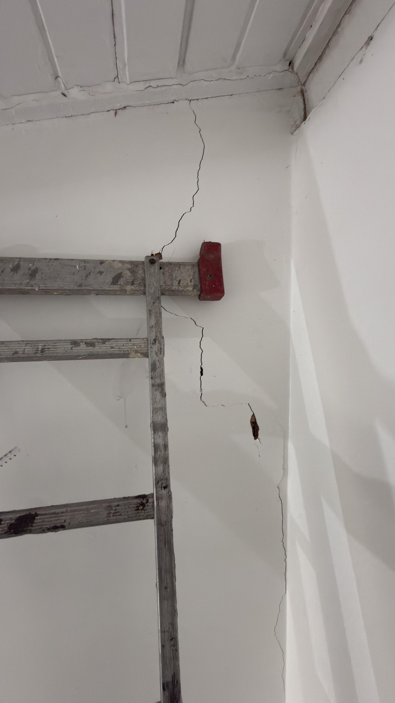
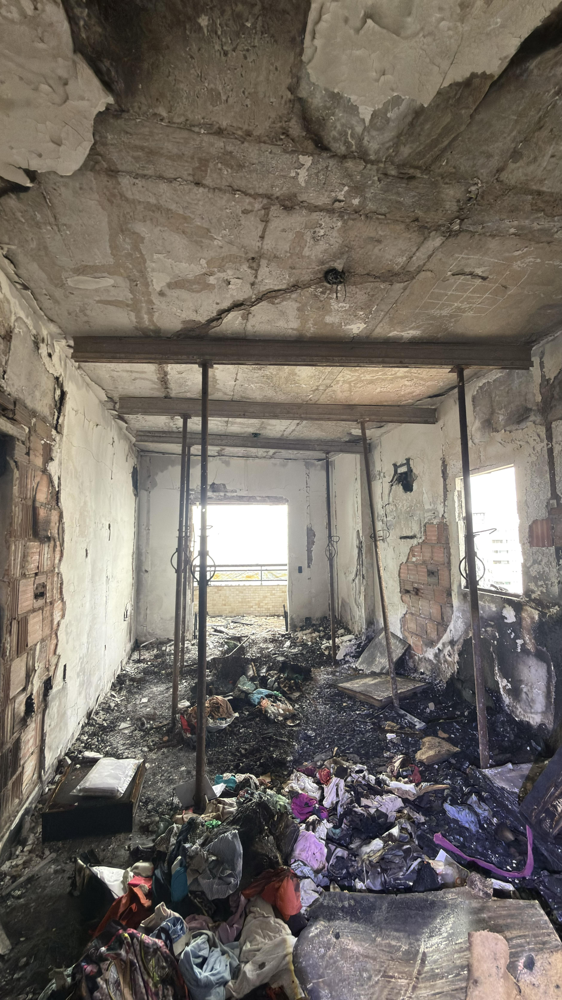
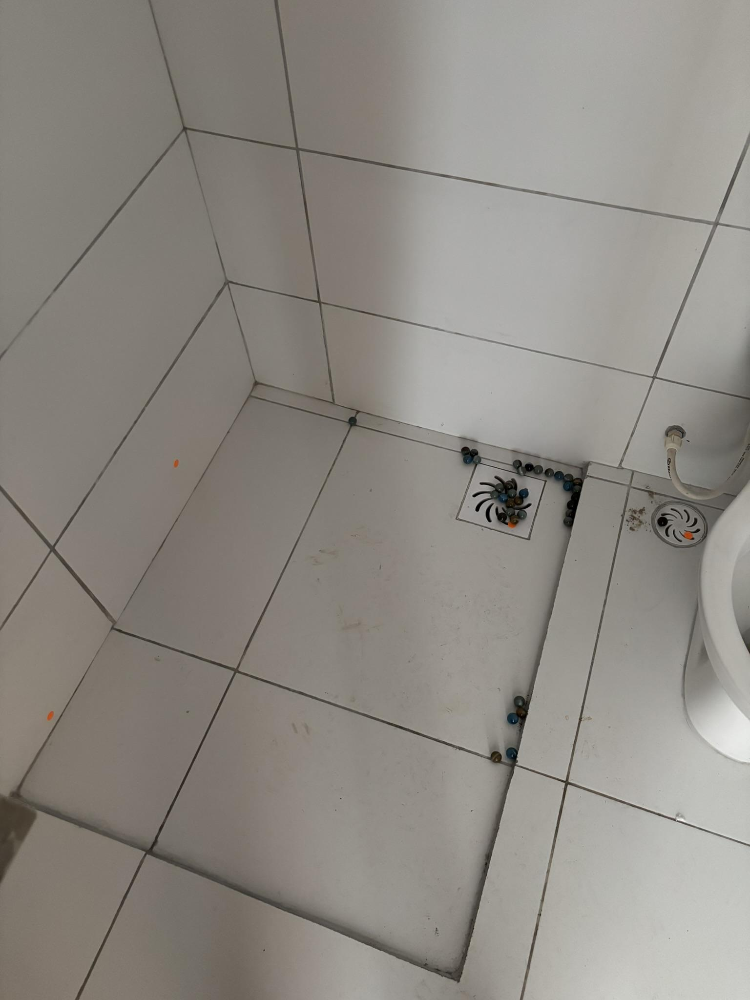

Apoio técnico ao advogado: assistência em perícias, produção de quesitos, análise crítica de laudos e elaboração de pareceres com embasamento normativo robusto.
Em ações judiciais envolvendo edificações — vícios construtivos, disputas de vizinhança, danos estruturais, atrasos de obra, descumprimento de projeto — quem decide muitas vezes é o laudo do perito nomeado pelo juízo. E quem questiona esse laudo é o assistente técnico de parte.
A VIP Engenharia atua como assistente técnico de advogados e suas partes, levando para o processo o mesmo rigor metodológico que aplica em laudos extrajudiciais. Operamos com discrição, prazo respeitado e linguagem que dialoga tanto com o juiz quanto com o perito.
Atendemos demandas em diferentes estados, com sigilo absoluto sobre informações sensíveis e neutralidade técnica frente aos fatos.
Modalidades de atuação
Atendemos em diferentes momentos do processo — da pré-litigância à audiência de instrução.
Acompanhamento da perícia oficial, formulação de quesitos, manifestação técnica nos autos e produção de laudo divergente quando necessário.
Análise técnica de uma situação para subsidiar decisão sobre ajuizar ou não, ou para fundamentar negociação extraprocessual.
Revisão técnica do laudo apresentado pelo perito do juízo, identificando inconsistências metodológicas e equívocos de fundamentação normativa.
Preparação técnica do advogado para audiências envolvendo conteúdo de engenharia, elaboração de réplicas e refutações.
Casos recentes


